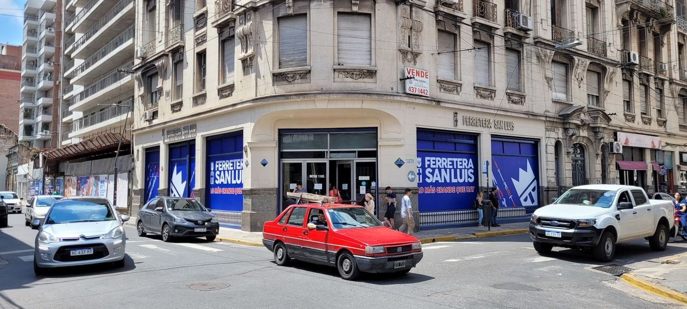
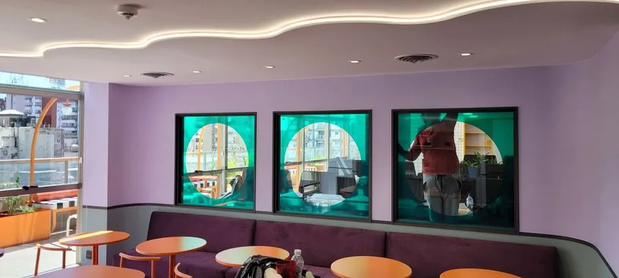
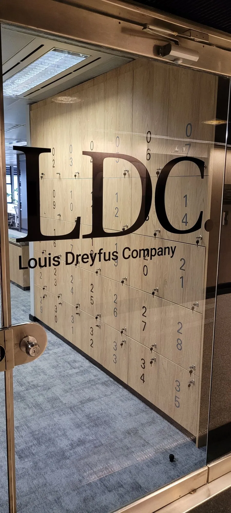
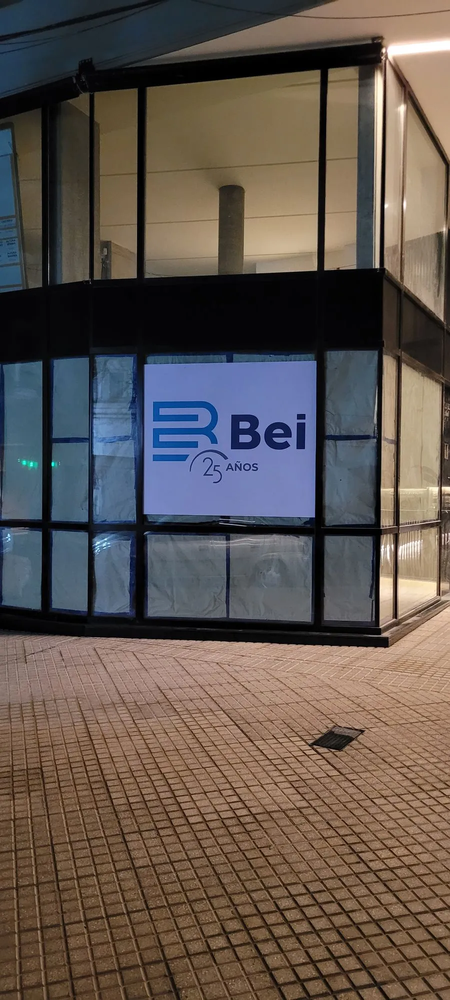
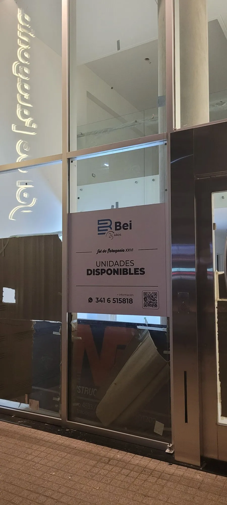
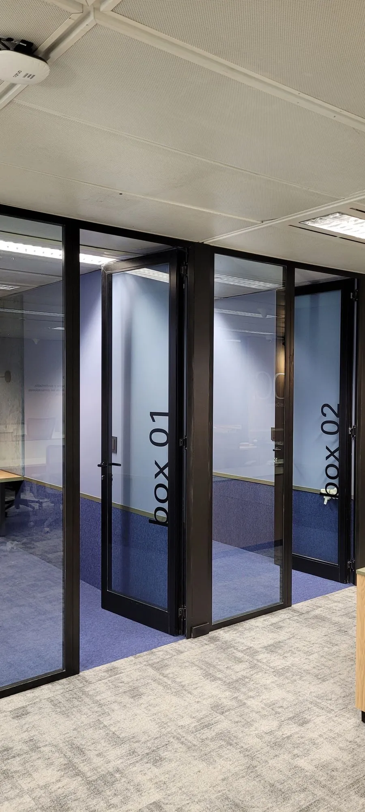

Ploteo y Rotulación de Vidrieras en Rosario
Vinilos para vidrieras, rotulación, vinilos de corte e impresos y esmerilados de privacidad. Convertí el vidrio de tu local en tu mejor vendedor, diseñado, fabricado e instalado por MOSS Visual en Rosario.

Ploteo de vidrieras llave en mano
Hacemos el ploteo y la rotulación de vidrieras de tu local en Rosario: aplicamos vinilos sobre el vidrio para mostrar tu marca, tus datos, tus promociones o para dar privacidad. Diseño, fabricación e instalación, todo en un solo lugar.
Le decimos "ploteo de vidrieras", "rotulación de vidrieras" o "vinilos para vidrieras", pero es lo mismo: vestir el vidrio de tu comercio para captar al cliente que pasa por la puerta.
- Vinilos de corte para logos, letras y datos sobre el vidrio
- Vinilos impresos full color para gráfica y promociones
- Vinilos esmerilados (efecto arenado) para privacidad
- Vinilos microperforados que se ven de afuera y dejan ver de adentro
- Gráfica de temporada que se cambia cuando querés
- Diseño e instalación incluidos en todos los proyectos
25 años vistiendo vidrieras en Rosario
Taller propio en Rosario, sin intermediarios. Controlamos el proceso completo: diseño, impresión, corte e instalación sobre el vidrio, con terminación prolija y sin burbujas.
- Fabricación 100% propia, no tercerizamos
- Vinilos de primera calidad, para interior e intemperie
- Se retiran sin dañar el vidrio para renovar la gráfica
- Presupuesto sin cargo en 24hs hábiles
- Instalación a cargo de MOSS Visual
- Experiencia en comercios, franquicias, oficinas y consultorios
Trabajos de ploteo y rotulación de vidrieras en Rosario





Tipos de ploteo de vidrieras que hacemos en Rosario
Rotulación de marca
Logo, nombre del local y datos de contacto en vinilo de corte. Lo primero que ve el cliente al pasar por tu vidriera.
Vinilos impresos full color
Fotos, fondos y gráfica de campaña en vinilo impreso. Ideal para promociones, lanzamientos y vidrieras de temporada.
Esmerilado y privacidad
Vinilo esmerilado (efecto arenado) que da privacidad sin tapar la luz. Perfecto para oficinas, consultorios y locales.
Vidrieras de temporada
Gráfica que se cambia por época del año o campaña. Los vinilos se retiran sin dañar el vidrio y se reemplazan fácil.
Del diagnóstico a la instalación
Diagnóstico gratuito
Analizamos tu vidriera actual y te damos un informe de visibilidad sin cargo ni compromiso.
Diseño y propuesta
Desarrollamos la propuesta gráfica para que veas cómo va a quedar el vidrio antes de aplicar.
Fabricación propia
Imprimimos y cortamos los vinilos en nuestro taller en Rosario. Sin intermediarios, con control de calidad.
Instalación llave en mano
Aplicamos el vinilo sobre el vidrio con terminación prolija y sin burbujas. Vos solo abrís la puerta.
Todo lo que necesitás saber sobre el ploteo de vidrieras
Ploteo, rotulación o vinilos: ¿es lo mismo?
Sí. Ploteo de vidrieras, rotulación de vidrieras y vinilos para vidrieras son distintas formas de nombrar lo mismo: aplicar vinilo adhesivo sobre el vidrio de un local. Algunos también le dicen "calcos" o "calcomanías" para la vidriera. En todos los casos se trata de usar el vidrio del frente como espacio de comunicación de la marca.
Vinilo de corte vs. vinilo impreso
El vinilo de corte se recorta en colores plenos a partir de un plotter de corte: es ideal para logos, letras, datos de contacto y horarios sobre el vidrio. El vinilo impreso permite full color, fotografías, fondos y degradés: es la opción para gráfica de temporada, promociones y campañas. Ambos se aplican sobre la cara interna o externa del vidrio según el caso.
Vinilos esmerilados y de privacidad
El vinilo esmerilado (también llamado efecto arenado o vinilo de privacidad) imita el vidrio esmerilado: deja pasar la luz pero impide ver el interior. Es muy usado en oficinas, consultorios médicos, estudios y locales que necesitan privacidad sin perder luminosidad. Se puede combinar con el logo recortado para que la marca quede transparente sobre el esmerilado.
Durabilidad y recambio
Un vinilo para vidriera de buena calidad dura varios años a la intemperie sin perder color. La gran ventaja es que se retira sin dañar el vidrio, así que podés cambiar la gráfica por temporada, promoción o cambio de identidad. Al fabricar en nuestro taller en Rosario, controlamos cada etapa: diseño, impresión, corte e instalación final.
Desde USD 30/m²
Vinilo de corte; impreso o microperforado desde USD 60/m²; esmerilado desde USD 30/m². Valor orientativo en dólares; cada trabajo es un presupuesto a medida que damos sin cargo en 24hs.
Ver todos los precios orientativos →Preguntas sobre ploteo de vidrieras en Rosario
¿Qué es el ploteo de vidrieras y para qué sirve?
El ploteo de vidrieras (también llamado rotulación de vidrieras o vinilos para vidrieras) consiste en aplicar vinilos sobre el vidrio de un local para mostrar la marca, logo, datos de contacto, promociones o para dar privacidad. Sirve para captar al cliente que pasa por la puerta y reforzar la identidad del comercio. En MOSS Visual diseñamos, fabricamos e instalamos en Rosario.
¿Cuánto cuesta plotear una vidriera en Rosario?
Como referencia orientativa, la rotulación en vinilo de corte parte de USD 30 por m², el vinilo impreso o microperforado desde USD 60 por m² y el esmerilado de privacidad desde USD 30 por m². El total depende de los metros de vidrio y el diseño; lo presupuestamos a medida sin cargo en 24hs.
¿Qué diferencia hay entre vinilo de corte y vinilo impreso?
El vinilo de corte se recorta en colores plenos (ideal para logos, letras y datos sobre el vidrio). El vinilo impreso permite full color, fotos y degradés (ideal para gráfica de temporada o promociones). En MOSS Visual fabricamos ambos en nuestro taller en Rosario.
¿Hacen vinilos esmerilados para dar privacidad a la vidriera?
Sí. El vinilo esmerilado (efecto arenado) da privacidad sin tapar la luz, ideal para oficinas, consultorios y locales. Se puede combinar con el logo recortado para que la marca quede transparente sobre el esmerilado.
¿El ploteo se puede sacar sin dañar el vidrio?
Sí. Los vinilos para vidriera se retiran sin dañar el vidrio y permiten cambiar la gráfica por temporada o promoción. Por eso son una solución práctica para comercios que renuevan su comunicación seguido.
¿Cuánto tarda el ploteo de una vidriera?
Una vez aprobado el diseño, un ploteo de vidriera estándar se fabrica e instala en pocos días. Al tener taller propio en Rosario controlamos los tiempos de principio a fin. Para casos simples solemos resolver en 48 a 72hs.
Cada día sin diagnóstico es un cliente que no entra por tu puerta.
Mandanos los datos de tu negocio y te decimos qué mejorar, sin cargo, sin compromiso
Sin visitas ni turnos. Completá el formulario desde donde estés y un especialista de MOSS Visual te devuelve un diagnóstico con las principales oportunidades de mejora para la vidriera de tu local.
Solicitá tu diagnóstico gratuito
Completá el formulario · Respondemos en menos de 24hs
¡Recibimos tu solicitud!
Un especialista de MOSS Visual te va a contactar por WhatsApp en menos de 24hs hábiles.
Enviar fotos por WhatsApp